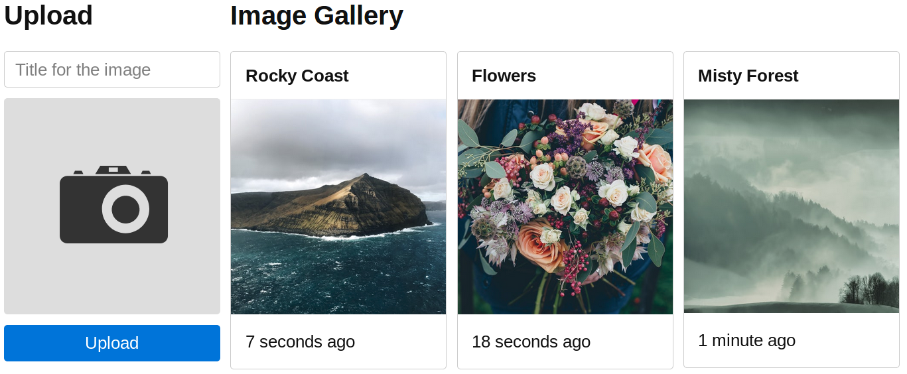

Tutorials
Upload files
On the old days (for the web) you had your own server with permanent storage, so any file that you wrote into your filesystem would persist there. But now if you edit a file with fs it will be destroyed with a server restart/relaunch.
For persistence we are going to use Cloudinary for images, and MongoDB with Mongoose for storing the metadata in a database. We will also use time-ago and Picnic CSS for making the interface easier. Finally I'll share some alternatives.
Feel free to open an issue if you get lost or get an error you cannot fix at any point during this tutorial.
Installation
Head over to Cloudinary website and create a new account with "Sign up for Free":
You can skip the setup without any problem but you have to confirm the email for it to work. Afterwards your account is ready to go! Have a look at the full documentation for Node.js, but we will be using the very basics in this tutorial.
You will also need to install and run MongoDB locally. Make sure that it is installed correctly by running mongod --version.
With those dependencies out of the way and after getting started we install server.js and the packages we'll be using:
npm install server cloudinary mongoose time-ago
Since we are handling our secrets correctly (right?), we edit our .env to add:
# .env
# ...
# Your personal information and secrets, available on your Cloudinary dashboard
CLOUDINARY_CLOUD=█████████
CLOUDINARY_KEY=██████████████
CLOUDINARY_SECRET=████████████████████████████
# Let's stick to a local one so far
MONGODB_URI=mongodb://localhost/image
We will have this file structure in the repository:
views: folder for our views.index.hbs: the main view with our gallery.
.env: where we store our secrets..gitignore: tell git what files to ignore, such as node_modules.image.js: the model for saving and retrieving images from the DB.index.js: entry point with our routes and init script.LICENSE: this project is MIT <3package-lock.jsonandpackage.json: npm info and dependencies.upload-all.js: the middleware that will handle file uploads.
Interface
Our interface is going to be a simple text field and a file input. We'll use Picnic CSS' Dropimage to make it look like this:

Since the objective of this tutorial is not to learn how to the interface, just put the code in views/index.hbs:
<!DOCTYPE html>
<html>
<head>
<meta charset="utf-8">
<title>File Upload</title>
<link href="https://unpkg.com/picnic" rel="stylesheet">
<style>
body { width: 90%; margin: 0 auto; max-width: 900px; }
form { position: sticky; top: 0; }
input, label, button { display: block; margin: .6em 0; width: 100%; }
.title { margin-top: 0; }
.avatar { padding-bottom: 100%; }
</style>
</head>
<body>
<div class="flex four">
<div>
<!-- NOTE: enctype is VERY important here! -->
<form method="POST" action="/" enctype="multipart/form-data">
<h2>Upload</h2>
<input type="hidden" name="_csrf" value="{{csrf}}">
<input class="title" name="title" placeholder="Title for the image" autofocus>
<label class="dropimage avatar">
<input name="src" title="Drop image or click me" type="file">
</label>
<button>Upload</button>
</form>
</div>
<div class="three-fourth">
<h2>Image Gallery</h2>
<div class="flex three">
{{#each pictures}}
<div>
<div class="card">
<header>{{this.title}}</header>
<img src="{{this.src}}">
<footer>{{this.time}}</footer>
</div>
</div>
{{/each}}
</div>
</div>
</div>
<script>
[].forEach.call(document.querySelectorAll('.dropimage'), function(img){
img.onchange = function(e){
var inputfile = this, reader = new FileReader();
reader.onloadend = function(){
inputfile.style['background-image'] = 'url('+reader.result+')';
}
reader.readAsDataURL(e.target.files[0]);
}
});
</script>
</body>
</html>
Just a couple of notes on this:
- Make sure that the
<form>element has the attributeenctypeproperly set tomultipart/form-dataas shown above. - Add the field for the CSRF token or just disable it since we are not using sessions.
Uploading user files
Now we get to the fun part, using server.js to actually upload the pictures. Let's say we want to upload every picture that gets uploaded to our site automatically. Our entry point has two routes: the homepage rendering all the images and the handler for storing the images into the database. We are also including a middleware that will automatically upload the image to Cloudinary:
const server = require('server');
const { get, post, error } = server.router;
const { render, redirect, status } = server.reply;
const uploadAll = require('./upload-all');
const Image = require('./image');
// Render the homepage with all pictures from the DB
const renderHome = async ctx => {
const pictures = await Image.find().sort('-_id').exec();
return render('index.hbs', { pictures });
};
// Store the posted body, which has the same props as the DB
const saveToDatabase = async ({ data }) => {
await new Image(data).save();
};
// Load the middleware, the two routes and launch the server
server(uploadAll, [
get('/', renderHome),
post('/', saveToDatabase, ctx => redirect('/')),
error(ctx => status(500).send(ctx.error.message))
]);
Then we write the actual code for the middleware that will upload the pictures. We are going to upload the file from ctx.files and then put those keys into ctx.data:
// First configure Cloudinary:
const cloudinary = require('cloudinary');
// Set-up the configuration from the environment variables
cloudinary.config({
cloud_name: process.env.CLOUDINARY_CLOUD,
api_key: process.env.CLOUDINARY_KEY,
api_secret: process.env.CLOUDINARY_SECRET
});
// Create a middleware to upload any file attached in `ctx.files`
module.exports = async ({ data, files = {} }) => {
for (const key in files) {
const res = await cloudinary.uploader.upload(files[key].path);
data[key] = res.secure_url;
}
};
Our file upload should be working just fine now.
Database
Finally let's set up the database with mongoose. Since we only need one Schema/Table and it's a simple one, we'll be setting up the whole thing in image.js:
const mongoose = require('mongoose');
const time = require('time-ago');
// Configure the Mongoose plugin
mongoose.connect(process.env.MONGODB_URI || 'mongodb://localhost/image');
// Define a simple Image schema
const ImageSchema = mongoose.Schema({
title: { type: String, required: true },
src: { type: String, required: true },
});
// This does not exist in the DB but can be infered from the ID; we'll also
// make it pretty with "time-ago". See _id => timestamp conversion:
// https://docs.mongodb.com/manual/reference/method/ObjectId.getTimestamp/
ImageSchema.virtual('time').get(function () {
return time.ago(this._id.getTimestamp());
});
// Create and export the model so we can use the DB
module.exports = mongoose.model('Image', ImageSchema);
That's it, now if we run node . and visit localhost:3000 you'll be able to see the form and upload images. They are stored in the local database, so make sure to use a hosted database for this (in another tutorial...).
Other vendors
We saw a couple of very specific vendors, Cloudinary and MongoDB. As with every tutorial this is a practical one with the objective of giving you something that works by the end of it. But feel free to adapt it to your own vendor!
The good thing of this approach is that Cloudinary code is very well encapsulated into upload-all.js, so we would just have to modify this file (and the configuration on .env) to plug in any other vendor we want.
We didn't encapsulate so well the Database access, so changing our Database would imply changing the index.js a bit and image.js completely. This is something we have to consider, specially when trying and comparing different vendors.
Secure images
Exercise: make sure that your images are, aham, images. Where would you check for this? How would you check it?
Tip: I couldn't really find a consensus on this, but make sure to find the best 2-3 ways of protecting against bad actors and either implement them all or choose the one you think is best.
Resize images
Exercise: have you tried uploading differently sized images? It gets all messed up. Use Cloudinary's image manipulation tools to crop the images and make them square.
Tip: here is the official documentation for image manipulation.
Tip: you can do it with just CSS, but what is the advantage of actually cropping them?
Keep reading
Subscribe to our Mailchimp list to receive more tutorials when released:
Get Great Tutorials